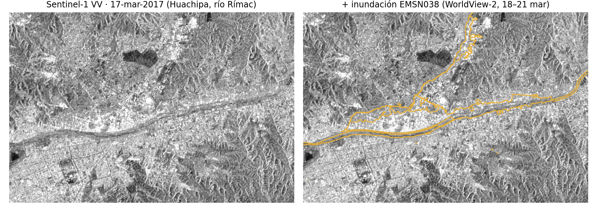
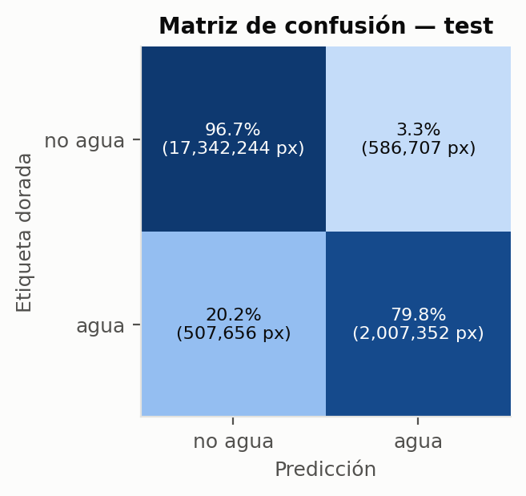
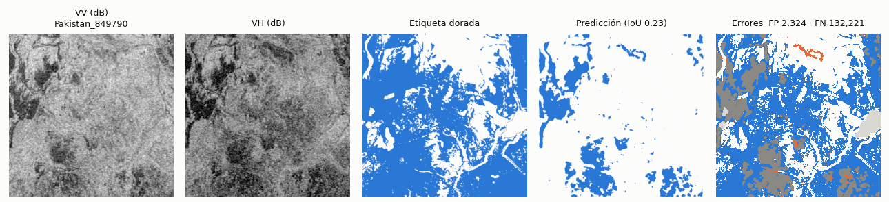
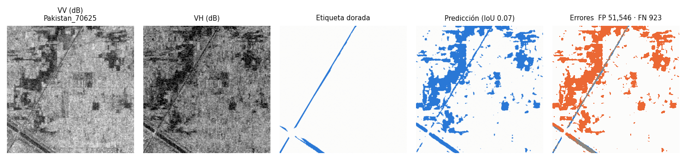
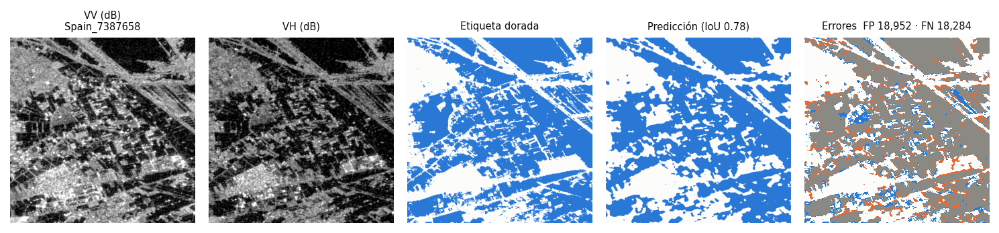
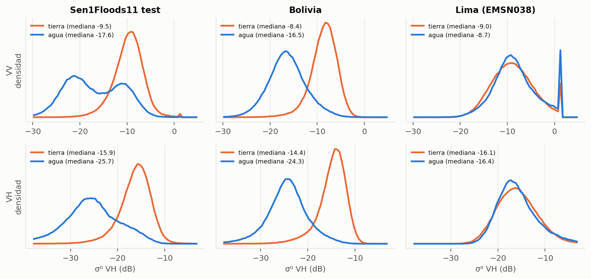

En una inundación, las nubes ciegan a los satélites ópticos. El radar de Sentinel-1 (VV + VH) las atraviesa, de día y de noche.
| Conjunto | Chips |
|---|---|
| Entrenamiento (dorados) | 252 |
| Validación / test | 89 / 90 |
| Bolivia (evento retenido) | 15 |
| Débiles usados* | 1,000 |
| Lima 2017 | 19 |
* Sin Bolivia ni ubicaciones de validación o test: sin fuga.

| Datos | Pérdida | |
|---|---|---|
| gold | Solo dorados | BCE+Dice |
| mixed | Dorados + débiles | BCE+Dice |
| pre → ft | Débiles, luego afinar | BCE+Dice |
| bce / dice | Ganador de arriba | BCE · Dice |
Mismo número de pasos para todos. Todo se decide solo con validación; test, Bolivia y Lima se miran una vez, al final.
Ronda 1 con una semilla; como el IoU oscilaba entre épocas, en la ronda 2 repetimos todo: media ± desviación sobre 3 semillas.
| Experimento | IoU val | IoU test | IoU/chip test | IoU Bolivia | IoU Lima |
|---|---|---|---|---|---|
| Solo dorados · BCE+Dice | |||||
| Dorados + débiles · BCE+Dice | |||||
| Pre. débiles → afin. dorados | |||||
| Solo dorados · BCE | |||||
| Solo dorados · Dice |
Media ± desviación estándar sobre 3 semillas. Resaltado: el mejor por IoU de validación.
Mezclar débiles es lo peor: 4 de cada 5 chips que ve la red traen los errores del umbral de Otsu. Preentrenar y afinar recupera casi todo, pero no supera a los dorados solos.
BCE sola y BCE+Dice empatan en validación, pero BCE varía 4 veces más entre semillas y rinde menos por chip y en Bolivia. Con una sola semilla habríamos concluido otra cosa.
El IoU por chip es menor: en chips con poca agua, unos pocos píxeles errados hunden el cociente.

Error dominante: omisión. Se pierde el del agua; solo el de la tierra se marca como agua.




| VV, mediana | Agua | Tierra |
|---|---|---|
| Test | −17.6 | −9.5 dB |
| Bolivia | −16.5 | −8.4 dB |
| Lima | −8.7 | −9.0 dB |
Mismos 142 chips de entrenamiento, 3 semillas: solo radar frente a radar + 6 bandas ópticas.
Código reproducible con un solo comando: github.com/gabo2607/sen1floods11-unet